How much sleep do you get on average?
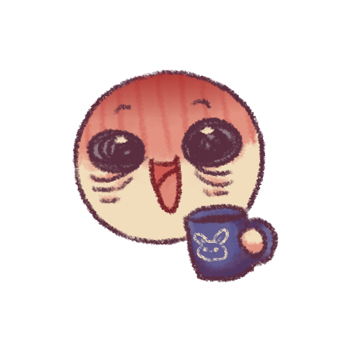
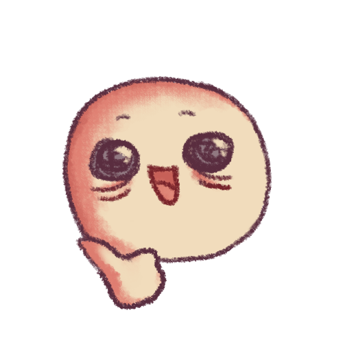
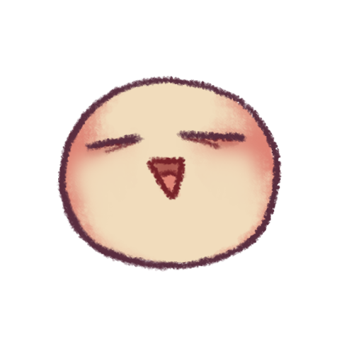
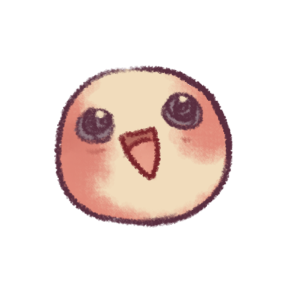
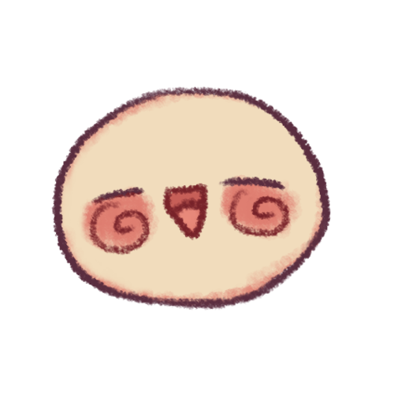
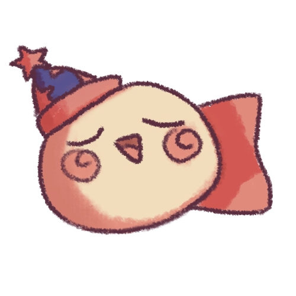
What kind of powers are you the most interested in having?
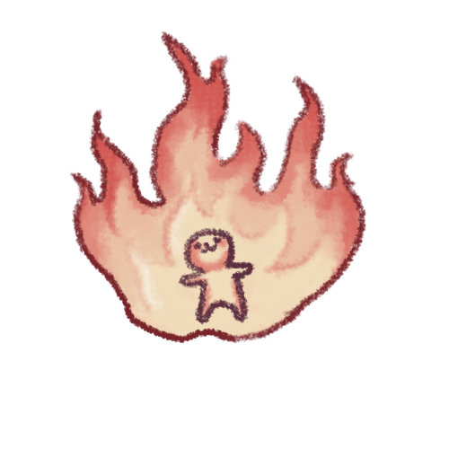
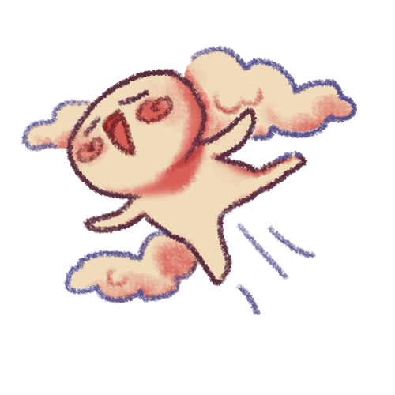
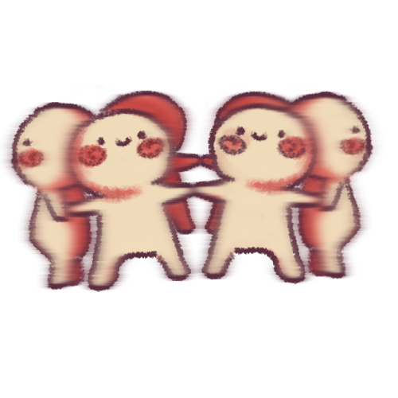

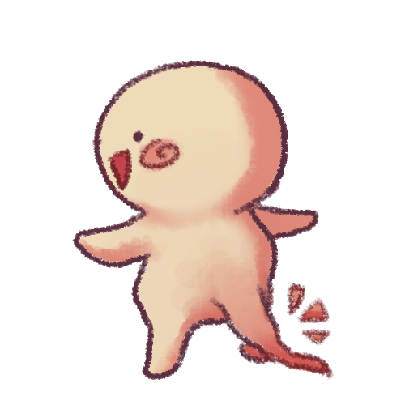
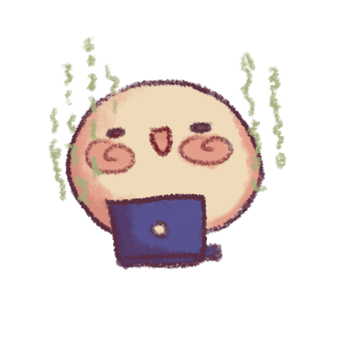
What kind of music do you usually enjoy?
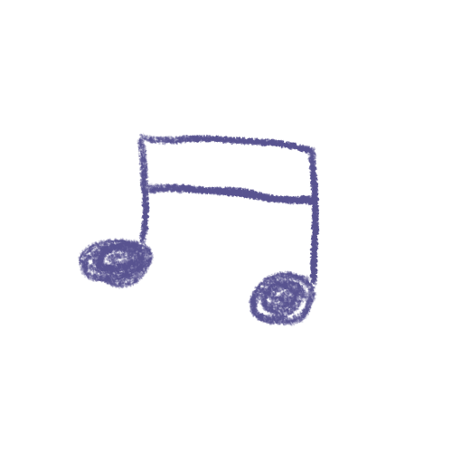
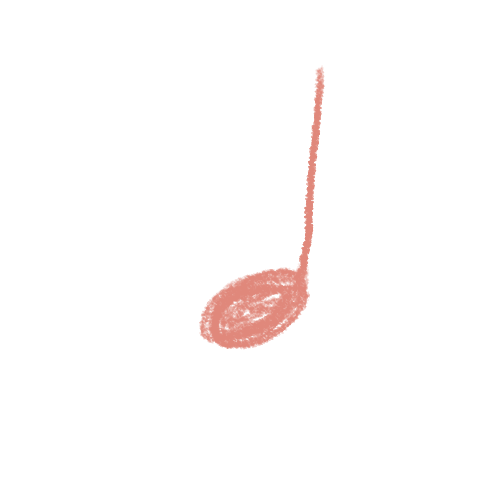
What genre of games do you most enjoy playing?
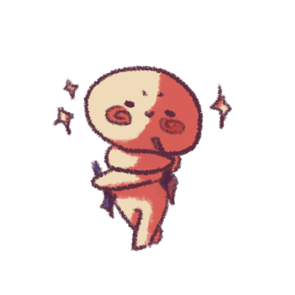
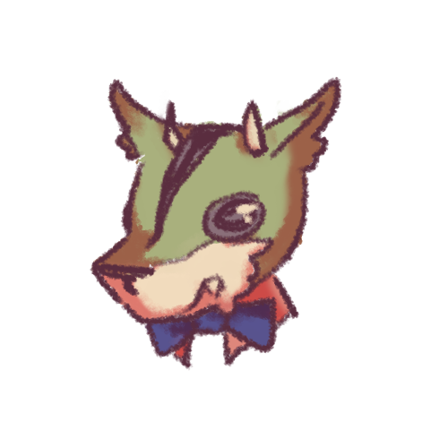
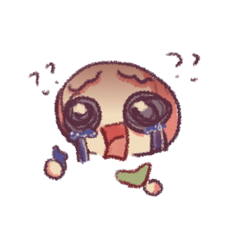
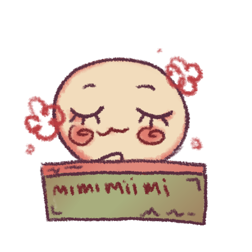
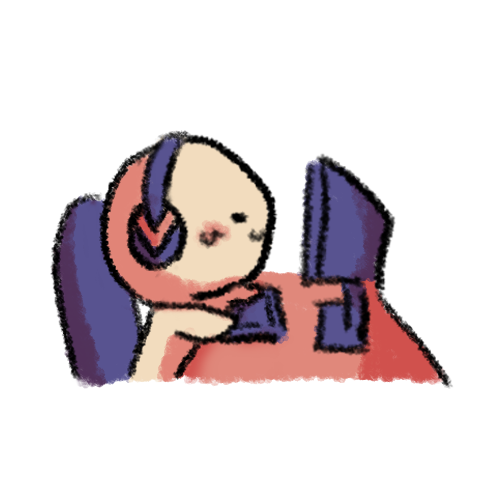
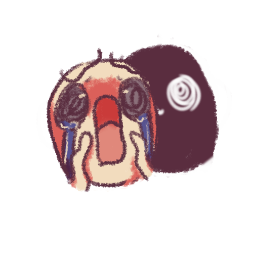
Which social media do you use the most?

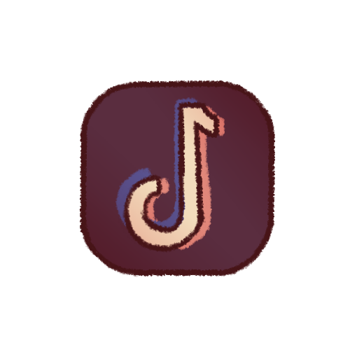
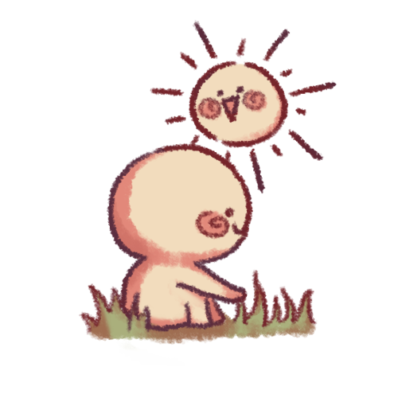
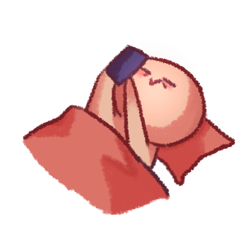
Your result is...
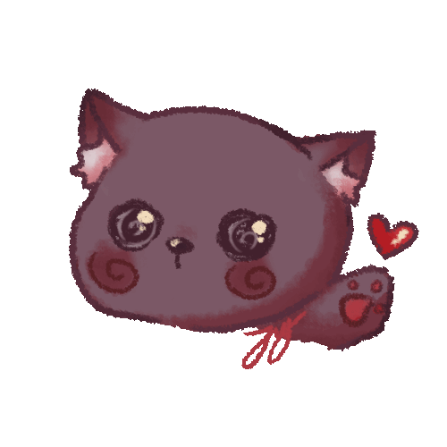
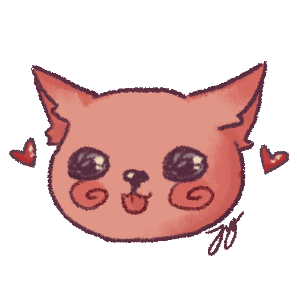
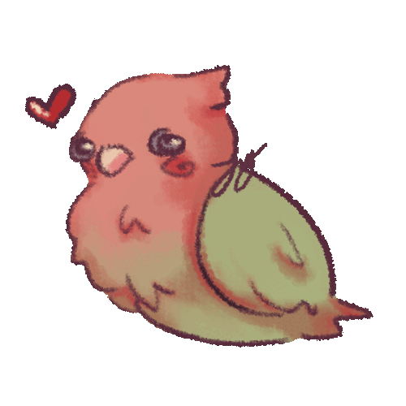
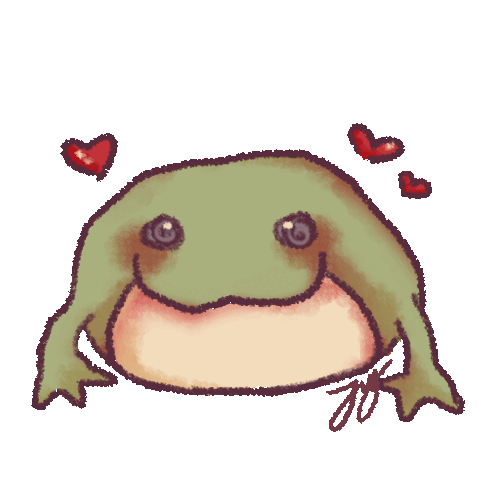
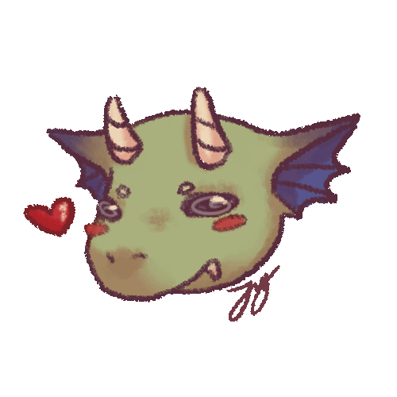
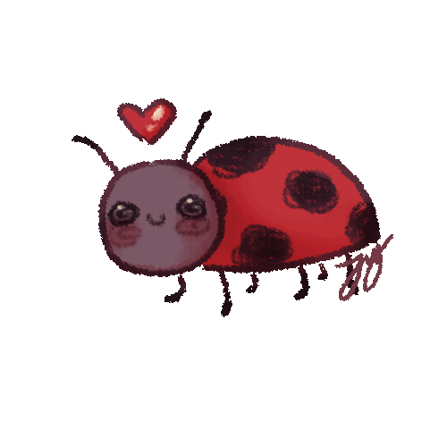